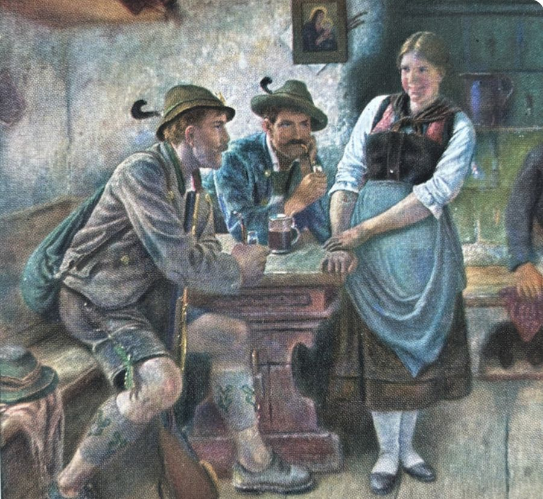
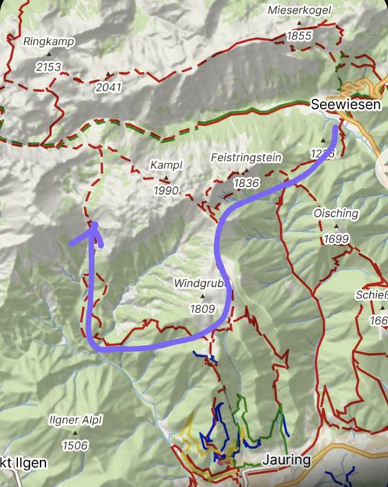
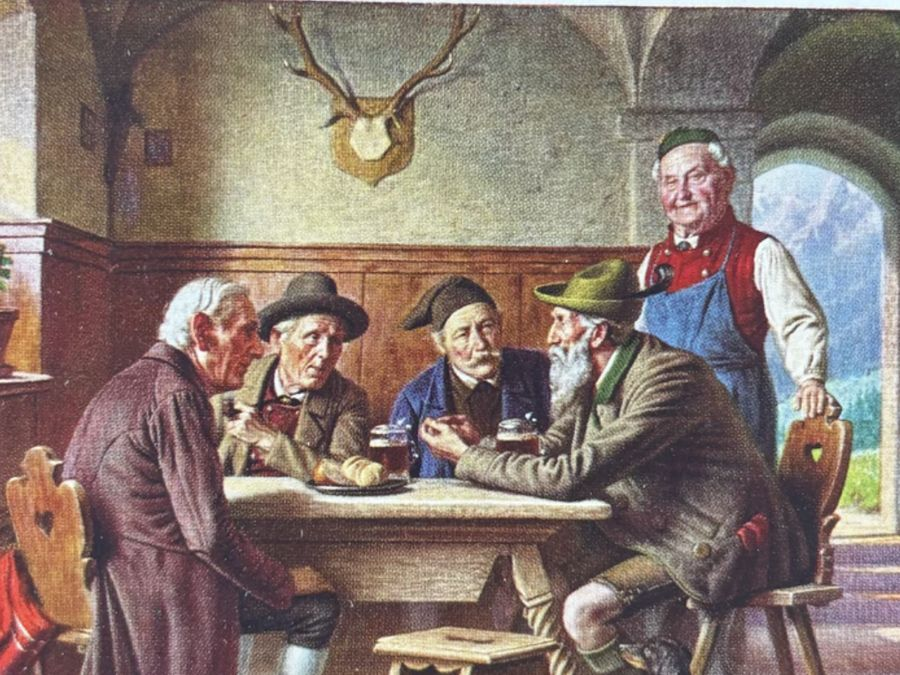

Hon v kostce
3 leče36,8 km↑ ≈ 2 600 m7 vrcholů, 5 přes 2 000 m2 chaty0 jezer
Erster Trieb · pátek · na Fölzalm
Seewiesen → Grasserhütte
Grasserhütte 1484 m5¼ Std.
11,4 km · ↑ 1 040 m · 5:12 h
Hřeben ve 1 960 m s výhledem k masivu Hochschwabu, pak dolů na Fölzalm mezi skalní stěny a kytky. Večer Erikin Schweinsbraten a domácí pálenky.
Seewiesen → Grasserhütte
11,4 km · ↑ 1 040 m · 5:12 h
Hřeben ve 1 960 m s výhledem k masivu Hochschwabu, pak dolů na Fölzalm mezi skalní stěny a kytky. Večer Erikin Schweinsbraten a domácí pálenky.
▶ Seewiesen 933 m ▲ 1 960 m, Gipfelrast ☾ Grasserhütte 1 484 m
Sepp: „Tisíc metrů nahoru. Pražan to ujde za pět hodin, kamzík za dvacet minut a Sepp vůbec, protože jede lesní cestou džípem. Sejdeme se u Krügerlu.“
- Parkování zdarma v Seewiesenu; podle Ondry je kousek níž po silnici ještě jedno místo. Auta tu kotví až do neděle, hon tu i končí.
- Trasa od rozcestníku v Seewiesenu (933 m) na jihozápad, nejvýš 1 960 m kolem 7,7. km, pak 480 m dolů na Fölzalm. Kdo celý týden dělal home office z gauče, tady se to dozví.
- Gipfelrast na 1 960 m: Jause z batohu, výhled na Hochschwab, deset minut ležet. Odpočinek je v revíru povinný. Pavel ho využije k historce, takže počítáme spíš s hodinou.
- Rozkaz dne: ze Seewiesenu na 1 960 m zhruba za čtyři hodiny, na chatě po šesti i s Rastem. Vyrážíme co nejdřív, protože odpoledne v červnu prší skoro každý druhý den. Ankunft → Krügerl. Sofort.
- Nocleh: Grasserhütte, Erika a Christian Grasser. Co se tam vaří a pálí, je ve výčepním lístku.
Trasa 1. leče v Mapy.cz ↗Parkoviště Seewiesen ↗Grasserhütte ↗
Zweiter Trieb · sobota · na kapitální kus
Grasserhütte → Hochschwab → Schiestlhaus
Schiestlhaus 2156 m4¾ Std.
9,1 km + vrchol · ↑ 1 180 m · 5:15 h
Den s nejvíc stoupáním z celého honu: z Fölzalmu krpálem na Fölzstein, pak hřebenovka přes tři vrcholy kolem 2 000 m. Na konci Schiestlhaus, první pasivní horská chata na světě, a Hochschwab 2 277 m s křížem a výhledem do všech stran. Ráno východ slunce ve 4:51.
Grasserhütte → Hochschwab → Schiestlhaus
9,1 km + vrchol · ↑ 1 180 m · 5:15 h
Den s nejvíc stoupáním z celého honu: z Fölzalmu krpálem na Fölzstein, pak hřebenovka přes tři vrcholy kolem 2 000 m. Na konci Schiestlhaus, první pasivní horská chata na světě, a Hochschwab 2 277 m s křížem a výhledem do všech stran. Ráno východ slunce ve 4:51.
▶ Grasserhütte ▲ Fölzstein 1 946 m ▲ Fölzkogel 2 022 m ▲ Karlhochkogel 2 096 m ▶ rozcestí 1 922 m ☾ Schiestlhaus 2 156 m ▲ Hochschwab 2 277 m
Ondrova trasa jde přes všechny tři vrcholy, i když to v hlášení nepsal. Podle Ondry jsou to dvě třetiny dne a taky nejlepší výhledy z celého honu.
Sepp: „Doleva po žebřících chodí kozorožci a Pražané, kteří ještě neviděli vrtulník zevnitř. My jdeme doprava.“
Od rozcestíDoprava k chatě, pak vrchol nalehko
Od rozcestí běžnou značenou cestou k Schiestlhausu. U chaty shodit batohy, objednat Krügerl (hned, samozřejmě) a na vrchol nalehko. Nebo večer Schüsseltrieb a vrchol až ráno na východ slunce.
Chata ↔ vrchol: 0,5 km · ↑ 90 m 20–30 min nahoru, běžná značená cesta
- Schüsseltrieb na Schiestlhausu (u nás poslední leč): kuchyně zhruba do 20:00, snídaně od 7:00, Hüttenruhe na chatách bývá od 22:00.
- Východ slunce na vrcholu: 19. 6. ve 4:51, 26. 6. ve 4:52 (na 2 277 m asi o 10 minut dřív než dole). Z chaty vyrazit ve 4:20, čelovka a teplá vrstva, nahoře bývá kolem 4 °C. Story až dole, nahoře je zima na prsty.
Úsek k rozcestí ↗Celá 2. leč ↗Chata → vrchol ↗Schiestlhaus ↗Hochschwab ↗
Dritter Trieb · neděle · hřebenem k autům
Schiestlhaus → Seewiesen
Seewiesen 930 m5¾ Std.
15,3 km · ↓ 1 610 m · 5:46 h
Hřebenem přes Hutkogel, Severinkogel a Krautgartenkogel kolem 2 000 m, kamzíci jsou tu podle Steiermark Tourismus skoro jistí. Pak tisíc metrů dolů k autům.
Schiestlhaus → Seewiesen
15,3 km · ↓ 1 610 m · 5:46 h
Hřebenem přes Hutkogel, Severinkogel a Krautgartenkogel kolem 2 000 m, kamzíci jsou tu podle Steiermark Tourismus skoro jistí. Pak tisíc metrů dolů k autům.
▶ Schiestlhaus ▲ Hutkogel 2 035 m ▲ Severinkogel 2 038 m ▲ Krautgartenkogel 1 988 m ★ Seewiesen
Sestup do Seewiesenu je podle Ondry docela nepříjemný, česky řečeno kolena to zaplatí. Trasu neposlal, níže je Mariho návrh z Mapy.cz.
Sepp: „Výstup je dobrovolný, sestup povinný. Kolena na vlastní riziko. Sepp za ně neručí, stejně jako za Ondrovy časy.“
Úseky
Trasa z Mapy.cz jde u Hutkogelu asi 90 m a u Krautgartenkogelu asi 50 m pod vrcholem, přes Severinkogel vede přímo. Jestli se dá vyjít až nahoru, ukáže terén.
Sestup a rozkaz dne
Z Krautgartenkogelu zhruba 1 000 m dolů. Mapy.cz vedou sestup nejdřív na východ a pak na jih, Ondra nechává výběr na nás. Na místě rozhodnou rozcestníky a stav cesty, ne Strava.
Rozkaz dne: snídaně v 7:00, odchod v 7:30, Rast na Severinkogelu kolem 10:30, u aut kolem 14:15, v Praze kolem 19:30. V pondělí v práci, jako by se nic nestalo.
Sepp: „Jezera nečekejte. Hochschwab je kras, voda tu mizí pod zem a teče do Vídně, která odsud bere asi 60 % pitné vody. Vídeňáci pijou Hochschwab. Vy pijete Krügerl.“
Oběžník Oberjägera
Grasserhütte vaří jen v pátek, sobotu, neděli a ve svátky. Tak to od května píše chata na svém webu. Obecní web Aflenzu tvrdí, že v červnu až září je otevřeno denně, ale Sepp by na to nesázel a zavolal. Na chatách tedy spíme v pátek na Grasserhütte a v sobotu na Schiestlhausu (ten má od zhruba poloviny května otevřeno denně).
Rezervuje se hlasem, do telefonu. Čísla jsou v Chatách na noc, Schiestlhaus bere telefon jen po–pá 10–11 h. Hlasovka, e-mail ani sticker na WhatsAppu nezaberou. Rezervujeme na 7 hlav.
Čtvrtek, nebo pátek? Rozhodne valná hromada. Při čtvrtku přibude noc v Seewiesenu u Schustera a večeře u Rogera, odkud se v pátek rovnou vychází. Kontakty jsou v Chatách na noc. Rogerovi se hodiny mění a jídlo prosí nahlásit předem, takže zavolat.
Hüttenschlafsack je povinný. Na Grasserhütte se povlečení nemění po každém hostovi, vlastní vložka je „unbedingt erforderlich“. Sepp ví, kdo tam spal před námi. My to vědět nechceme. A pokoj pro dvanáct znamená špunty do uší.
Květen nein, konec června jawohl. V druhé půlce května je na Schiestlhausu pod nulou skoro dvě noci ze tří a každý třetí den tam sněží. Podrobnosti v Seppově Wetterberichtu níž.
Lovecká družina
Na honu: 7 jistých · 7 hlasů na valné hromadě · 2 auta do revíru
Seppův Wetterbericht
Sepp: „Mein Rat: konec června. Loni v květnu jsme nahoře našli Pražana, co od podzimu čekal, až otevřou Schiestlhaus. Teď ho na chatě vedou v inventáři jako věšák.“
| Průměr 2015–2025 | 1.–14. 5. | 15.–31. 5. | 1.–15. 6. | 16.–30. 6. |
|---|---|---|---|---|
| Chaty | Schiestlhaus zavřeno | Schiestlhaus otevírá | obě otevřené | obě otevřené |
| Seewiesen 930 m, max | 14 °C | 15 °C | 19,5 °C | 21 °C |
| Grasserhütte 1 484 m, noc | 1,9 °C | 3,3 °C | 6,9 °C | 8,6 °C |
| Schiestlhaus 2 156 m, den / noc | 5,9 / −2,5 °C | 6,9 / −1,1 °C | 11,5 / 2,5 °C | 13,0 / 4,3 °C |
| Noci pod nulou na Schiestlhausu | 75 % | 64 % | 16 % | 8 % |
| Dny, kdy na Schiestlhausu sněží | 34 % | 32 % | 4 % | 2 % |
| Pořádně mokré dny (≥ 5 mm) | 37 % | 39 % | 44 % | 30 % |
| Odpoledne prší (12–20 h) | 50 % | 56 % | 53 % | 45 % |
| Pěkné dny (sucho, ≥ 8 h slunce) | 31 % | 26 % | 36 % | 38 % |
| Sepp říká | ✗ Nein | ✗ Nein | ! Geht schon | ✓ Jawohl |
Víkendy 2027: pátek Grasserhütte, sobota Schiestlhaus, neděle domů
14.–16. 5.✗ NeinLetnice: Rakušané na chatách, Schiestlhaus teprve otevírá, nahoře zima.
21.–23. 5.✗ NeinDvě noci ze tří pod nulou, každý třetí den nahoře sněží.
28.–30. 5.! Spíš neBoží tělo (čt 27. 5.) je v Rakousku prodloužený víkend, chaty budou plné. Grasserhütte má otevřeno už ve čtvrtek. Sníh pořád možný.
4.–6. 6.! Geht schonTepleji, ale první půlka června vychází v datech nejdeštivější (44 % mokrých dní).
11.–13. 6.! Geht schonDtto. Noc na Schiestlhausu kolem 2–3 °C.
18.–20. 6.✓ JawohlSepp doporučuje. Východ slunce na vrcholu ve 4:51.
25.–27. 6.✓ JawohlSepp doporučuje. Nejtepleji a nejméně mokrých dní. Východ slunce ve 4:52.
Data: model ERA5 přes Open-Meteo, roky 2015–2025, přepočtený na výšku Seewiesenu, Grasserhütte a Schiestlhausu. Je to model v hrubé mřížce: mokré dny spíš nadsazuje a sníh, který zbyl ze zimy, neukazuje vůbec. Týden před cestou zavoláme na Schiestlhaus, jak to nahoře vypadá. A protože odpoledne prší skoro každý druhý den, Sepp vyráží brzo a ve tři je u Krügerlu. Všechno nejlepší hned.
Revírní mapa
Čáry jsou přesné trasy z Mapy.cz, čtverce mají 1 × 1 km. Tečkovaná čára od rozcestí na vrchol (varianta 2D) je jen schematická, cestu se žebříky Mapy.cz nenaplánují. V terénu navigujeme podle odkazů u lečí. Sepp navíc podle kamzíků.
Plán lovu
{{tally}}
Výřad je společný: kdo na vrcholu stojí, odškrtne ho za celou družinu. {{hint}} Prezence ↓
Sepp: „Osmý kus se v plánu lovu nevede: úsměv hostinské. Ten se nedá ulovit, jen vysloužit. Pražany tu mají rádi a oni je taky, takže to končí oboustranně: vy chválíte její Schweinsbraten, ona vaši němčinu. Obě strany přitom trochu přehánějí.“

Valná hromada spolku
Svobodný myslivecký spolek rozhoduje demokraticky. Jeden myslivec, jeden hlas, přihlásíme se jménem v prezenci hned pod tím a hlasujeme rovnou u každého usnesení. Usnesení platí, když hlasují aspoň čtyři ze sedmi. Usnesení o trasách jsou nezávazná, hlasuje se jen o náladě. Kudy přesně půjdeme, rozhodneme na rozcestí podle počasí a nohou. Dopředu je potřeba vědět jen jedno: 1C jde jen s odjezdem ve čtvrtek. Při rovnosti rozhoduje Jindřich: hlasuje poslední, ale přesně. Lencoš smí za hlas nabídnout tyčinku, Vlasta cigaretu. Obojí je v souladu se stanovami.
Sepp: „Svobodný spolek z Prahy hlasuje o tom, kdy pojede pít do Rakouska. Za Franze Josefa by z toho byl proces pro velezradu, dneska jen kocovina. Výsledek pak oznámí Sepp.“
Usnesení č. 1: odjezd z Prahy
Praha → Seewiesen 392 km, asi 4 h 50 min podle Mapy.cz. Rakouské dálniční známky na obě auta kupujeme předem online, ať první zastávka není u pokladny. Trasa autem v Mapy.cz ↗
Čtvrtek a pátek podrobně
Čtvrtek: Anschuss v Seewiesenu
odjezd po obědě · 392 km · v Seewiesenu před sedmou
Program: Krügerl na přivítání a večeře u Rogera v Seewiesenu, spát u Schustera. Ráno se vychází přímo ze Seewiesenu.
V čem je dobrý: v pátek start v osm, i s kocovinou. Na chatě s 1A kolem druhé, s 1B kolem třetí, takže odbočka na Windgrube se vejde s rezervou.
Daň: den dovolené a noc navíc. A páteční kocovina jde s námi do 1 960 m.
Sepp: „Kocovina do kopce je tradiční štýrská léčba. Zabírá u dvou Pražanů ze tří. Mariho volbu znáte.“
Pátek: rovnou do leče
odjezd v 5:00 · na trase kolem desáté
Program: budíček ve čtyři, pět hodin v autě a z parkoviště rovnou do kopce. První Krügerl až na Grasserhütte.
V čem je dobrý: o den dovolené a o noc míň, start střízlivý.
Daň: tisíc metrů stoupání hned po pěti hodinách v autě. Na chatě s 1A kolem 16:30, s 1B kolem 17:30, kdy už bývají odpolední bouřky.
Sepp: „Pražan, který vstane ve čtyři, aby šel do kopce střízlivý. Takového Sepp za čtyřicet let neviděl. A vidět nechce.“
Usnesení č. 2: termín
Podklady v Seppově Wetterberichtu. Doporučené víkendy jsou 18.–20. 6. a 25.–27. 6., při čtvrtečním odjezdu vždy o den dřív.
Usnesení č. 3, nezávazné: 1. leč, kudy na Fölzalm
Varianty 1A, 1B a 1C
Ondrova trasa
11,4 km · ↑ 1 040 m · 5:12 h
Rozdíl: základní trasa. 1B ji jen prodlouží odbočkou, 1C jde od Windgrube jinudy.
Co uvidíme: hřeben ve 1 960 m pod Kamplem s výhledem k masivu Hochschwabu, pak sestup na Fölzalm. Tu Grasserovi popisují jako jedno z nejhezčích míst Hochschwabu, obklopené skalními stěnami a plné kytek.
V čem je dobrá: Ondra ji prošel, na chatě jsme ze všech variant nejdřív a večer je delší.
Daň: cestou žádná hospoda, jen Jause z batohu.
Sepp: „Ondra to prošel a vrátil se. V revíru je to nejvyšší doporučení.“
Totéž + odbočka na Windgrube
14,9 km · ↑ 1 095 m · 6:10 h
Rozdíl proti 1A: nic se nevylučuje. Jdeme celou 1A, včetně hřebene ve 1 960 m pod Kamplem a Fölzalmu. Jen z rozcestí ve 1 760 m odbočíme na jih po plató, 1,7 km tam a stejnou cestou zpět.
Co uvidíme navíc: vrchol Windgrube (1 809 m), kde se podle Steiermark Tourismus otevírá panorama na celý masiv Hochschwabu. Hned vedle stojí Schönleitenhaus na Aflenzer Bürgeralm, otevřený celoročně.
V čem je dobrá: hospoda v půlce dne a o vrchol víc, přitom jen o 55 m víc stoupání.
Daň: +3,5 km a +1 h. S pátečním odjezdem na chatě kolem 17:30, takže déle venku v době odpoledních bouřek. Se čtvrtečním kolem třetí.
Sepp: „Hospoda v půlce trasy. Kdo hlasuje proti, hlasuje proti heslu.“
Ondrův oblouk přes Fölzklamm
16,6 km · ↑ ≈ 1 530 m · 8:30 h Mapy.cz
Rozdíl proti 1A: do rozcestí ve 1 760 m a k Windgrube stejné jako 1B. Pak se ale nevracíme: sejdeme na jihozápad do soutěsky Fölzklamm (800 m) a Fölzgrabenem 700 m nahoru na Fölzalm. Hřeben ve 1 960 m pod Kamplem tím vynecháme.
Co uvidíme navíc: Windgrube a Schönleitenhaus jako v 1B, pak soutěsku Fölzklamm s Gasthofem Schwabenbartl na dně a cestou nahoru Steinbockleiten, kozorožčí stráň.

Ondrův náčrt z WhatsAppu, fialově.
V čem je dobrá: skutečný okruh bez vracení a dvě hospody po cestě. Přesně to, co Ondra nakreslil.
Daň: o 3 h 20 min delší než 1A a zhruba o 500 m víc stoupání, z toho 700 m odpoledne po obědě. Jen se čtvrtečním odjezdem, pak jsme na chatě kolem šesté. S pátečním až kolem osmé večer. Otevírací dobu Schwabenbartlu ověřit.
Sepp: „Dolů k hospodě a pak sedm set metrů nahoru s plným žaludkem. Ve Štýrsku se tomu říká Verdauungsspaziergang.“
Usnesení č. 4, nezávazné: 2. leč, co s vrcholem
Varianty 2A až 2D
Klasika: k chatě, vrchol nalehko
9,1 + 0,9 km · ↑ 1 090 + 90 m · 4:45 h + 30 min
Rozdíl: základ. 2B a 2C jsou 2A plus odpolední přídavek od chaty, 2D mění jen úsek z rozcestí na vrchol.
Co uvidíme: hřeben Fölzstein, Fölzkogel a Karlhochkogel kolem 2 000 m, pak vrchol Hochschwabu s velkým křížem a výhledem do všech stran.
V čem je dobrá: nejvíc času na Schüsseltrieb. Vrchol klidně až ráno na východ slunce.
Daň: nic navíc. Pro některé je to právě ta daň.
Sepp: „Rozumná volba. Sepp ji nesnáší.“
Klasika + G'hacktkogel
+2,9 km tam a zpět · ↑ 230 m · 1:20 h
Rozdíl proti 2A: nic se nevylučuje. Celá 2A a odpoledne navíc od chaty přes vrchol na G'hacktkogel a stejnou cestou zpět. Jde spojit s 2C i 2D, jen na to musí zbýt čas.
Co uvidíme: od kříže dál po plató na G'hacktkogel (2 213 m) nad G'hackte, klasickou zajištěnou cestou na Hochschwab s lany a řetězy. Hlavní atrakce: lidi, co po ní lezou. My jdeme po plató normální cestou, bez výbavy.
V čem je dobrá: dva vrcholy přes 2 200 m za hodinu dvacet a ferrata jen jako podívaná.
Daň: hodina a kus z odpoledního odpočinku.
Sepp: „Na žebříky se nejlíp kouká seshora. S Krügerlem v ruce.“
Klasika + Ringkamp
+6,7 km tam a zpět · ↑ 415 m · 2:45 h
Rozdíl proti 2A: nic se nevylučuje. Celá 2A a odpoledne navíc od chaty na sever po plató na Ringkamp a zpátky. Jde spojit s 2B i 2D.
Co uvidíme: severní část plató a Ringkamp (2 153 m) nad hřebenem, po kterém vede 3. leč.
V čem je dobrá: nejdelší přídavek, pro ty, kterým 4:45 h nestačilo. Dá se vzít i 3. den cestou za +2,6 km a +175 m.
Daň: skoro tři hodiny odpoledne, kdy často prší.
Sepp: „Ringkamp je pro lidi, na které doma nikdo nečeká.“
Žebříky rovnou na vrchol
≈ +355 m z rozcestí · délku Mapy.cz nespočítají
Rozdíl proti 2A: až k rozcestí (1 922 m) stejné, se všemi třemi vrcholy. Pak místo běžné cesty k chatě po žebřících rovnou na vrchol a z něj 0,5 km dolů k chatě. Nepřijdeme o nic kromě pohodlí, jen jdeme nahoru s batohy. Jde spojit s 2B i 2C.
Co uvidíme: vrchol z té strmější strany, rovnou z rozcestí, bez zacházky přes chatu.
V čem je dobrá: nejkratší cesta na vrchol a jediná varianta s adrenalinem.
Daň: jen za sucha, bez závratí, s rukavicemi a úplně střízlivě. Batohy jdou nahoru s námi. Kdo váhá, jde 2A.
Sepp: „Hlas pro 2D se počítá dvakrát. Jednou nahoře, jednou u pojišťovny.“
Mimo hlasování, když prší: z Grasserhütte přes Voisthalerhütte rovnou na Schiestlhaus, 7 km, ↑ 740 m, 3:15 h. Bez hřebene, zato s chatou v půlce. O tom rozhodne počasí, ne valná hromada. Zkratka v Mapy.cz ↗
Usnesení č. 5: první Krügerl
Podklady ve výčepním lístku. Hostinský výsledek ignoruje a natočí, co má.
Usnesení č. 6: hymna honu
Podklady v playlistu ve Spotify, sedm kusů. Kapellmeister Smeky výsledek ignoruje a stejně začne Rosamunde.
Usnesení č. 7: na východ slunce na vrchol
Ráno po 2. leči: ze Schiestlhausu vyrazit ve 4:20, na vrchol je to 20–30 minut a slunce vychází ve 4:51. Čelovka a teplá vrstva jsou ve výstroji. Když bude mlha, ruší usnesení počasí, ne valná hromada.
Sepp: „Pražan ve čtyři ráno na vrcholu, a střízlivý. Sepp tomu uvěří, až uvidí fotku.“
Zvěř v revíru
Gams · kamzík
Hochschwab je kamzičí revír. V květnu a červnu mají kamzice mladé, fotí se z dálky. Z jejich chlupů je Gamsbart, štětka na klobouk.
Steinbock · kozorožec
Cesta na Fölzalm od Fölzklamm vede přes Steinbockleiten, Kozorožčí stráň. Mezi Schiestlhausem a Häuslalm je turisté fotí i s mladými. Kozorožec po žebřících chodí. My ne, leda by na rozcestí vyhrála 2D.
Rothirsch · jelen
Spíš v lesích níž nad Seewiesenem, nejlíp za šera. V červnu má paroží ještě v lýčí, říje je až v září. Až uslyšíme z lesa tlumené mumlání, není to jelen. To je Pavel ve druhé hodině historky.
Sepp: „Kamzík vyleze na Hochschwab za dvacet minut. Bez hůlek, bez Garminu, bez tyčinky od Lencoše. A nikdy to nedá na Stravu. Proto ho respektuju.“
Výčepní lístek

Pivo
Märzen je nejběžnější pivo v Rakousku. Gösser je z Leobenu, nejbližšího velkého pivovaru, a patří Heinekenu. Murauer patří družstvu, takže je to jediné pivo svobodného spolku. Märzen vaří podle pivovaru od roku 1495, tedy déle, než nám vládli Habsburkové.
Krügerl 0,5 l · Seidl 0,3 l · Pfiff 0,2 l pro řidiče. Co přesně točí Grasserhütte a Schiestlhaus, jejich weby neuvádějí. Tohle jsou štýrská piva, na která tu nejspíš narazíme. Krügerl se objednává ještě před sundáním batohu. Všechno nejlepší hned.
Pálenky bylinné, lesní i ovocné
Pálenky pálí na Grasserhütte sami. Panák se tu řekne Stamperl. Jablka a hrušky jsou štýrská klasika, jeřabinová Vogelbeere voní marcipánem a je drahá, protože se trhá ručně a dá málo alkoholu.
Kuchyně Grasserhütte
- Erikin Schweinsbraten se Semmelknödel a zelím
- Polévka se štrůdlem, Kaspressknödel nebo Frittaten
- Brettljause a Speckbrot
- Kaiserschmarrn, Palatschinken, jablečný koláč
Podle webu chaty. Na Schiestlhausu se vaří celý den, kuchyně zhruba do 20:00.
Kuchyně Zum Roger
- Schweinemedaillons s Rösti nebo Spätzle
- Hříbkové rizoto s kuřetem, Pappardelle s houbami
- Spaghetti frutti di mare, Bruschetta s liškami
Podle lístku na webu, hlavní jídla 14,70–19,50 €. Habsburkové ztratili Benátky v roce 1866 a po roce 1918 i moře. Roger vrací obojí na talíř: frutti di mare v 933 m nad mořem, které Rakousko nemá.
{{krSays}}
Myslivecký slovníček
Grüß Gott · Servusdobrý den · ahoj (Servus i na rozloučenou)
Waidmannsheil!myslivosti zdar! Odpovídá se: Waidmannsdank!
Berg Heil!pozdrav na vrcholu, u kříže na Hochschwabu
Prost! · Zum Wohl!na zdraví!
Stamperlpanák
Noch sieben Krügerl, bitte!ještě sedm piv, prosím!
Sieben Stamperl, bitte!sedm panáků, prosím!
Zahlen, bitte! · Getrenntúčet, prosím · každý zvlášť (Sepp vždycky)
Sauerei!svinstvo. Odtud český sajrajt, v družině značení piva.
Jause · Rastsvačina · odpočinek
Trieb · Schüsseltriebleč · poslední leč
Streckevýřad
Gamsbartštětka z kamzičích chlupů na klobouk
Biwakspaní pod širákem. Smekyho sen, Seppova noční můra
Hüttenruhenoční klid na chatě
Jägerlateinmyslivecká latina, mírně přibarvené historky
Schwindelfreikdo nemá závratě (podmínka pro žebříky)
Alles Gute sofort!všechno nejlepší hned!
Seppova vlastivěda
Arcivévoda a poštmistrova dcera
„Na Seebergu kousek od Seewiesenu koupil roku 1818 arcivévoda Jan, bratr císaře Františka, statek Brandhof. Udělal z něj vzorové hospodářství a loveckou chatu. Kamzíků tu tehdy bylo poskrovnu, dnešní stavy jsou zásluha jeho a jeho dědiců. Zamiloval se do Anny Plochlové, dcery poštmistra z Aussee, a šest let bojoval o císařův souhlas. Vzali se v noci 18. února 1829 v kapli na Brandhofu a oficiálně to oznámili až o čtyři roky později. Anna pak dostala titul svobodná paní z Brandhofenu. Bratr panovníka si vezme holku z pošty a čtyři roky to nikdo neví. U vás by to bylo v Blesku druhý den ráno. Jodler o něm máte v playlistu pod pětkou.“
Mariazell, pouť i pro Čechy
„Za Seebergem leží Mariazell. Poutníci z Rakouska, Uher, Čech a Moravy sem chodili už ve 13. století. Zdejší Panna Marie byla patronkou celé podunajské monarchie a mezi jejími tituly je i Matka slovanských národů, takže je trochu i vaše. Vaši předkové sem šli pěšky pro odpuštění hříchů. Vy jedete autem, hříchy vezete v kufru a odpuštění čekáte od hostinské.“
Loden, ve kterém se chodí na hon
„Steireranzug, šedozelený oblek z lodenu, zpopularizoval taky arcivévoda Jan. Pak ho nosila šlechta a císař František Josef v něm jezdil na hony do Mürzstegu. Konzervativní Rakousko ho nosí dodnes. Klobouk s Gamsbartem je ve výstroji dobrovolný. Loden doporučuju, Goretex toleruju. Gregyho přednášku o membránách netoleruju.“
Chaty na noc
| Chata | Otevřeno | Kontakt a GPS | Poznámky |
|---|---|---|---|
| Schusters Alpenpanorama ↗ Seewiesen 36 ! Noc ze čtvrtka · jen při čtvrtku |
restaurace čt do 19:00, po–út zavřeno ubytování ověřit při poptávce |
+43 3863 24101 office@schusters-alpenpanorama.at Poptávka na webu ↗ |
Devět apartmánů pro 2–5 lidí, k tomu pokoje pro horaly (Bergsteigerzimmer) za 57,50 € na osobu a noc. Parkuje se zdarma před domem a ráno se vychází rovnou ze Seewiesenu. Nekuřácké, Vlasta kouří venku. |
| Zum Roger ↗ Seewiesen 37 Večeře při čtvrtku |
teď čt od 16:30, hodiny se mění | +43 664 9185963 staudro@zumroger.at |
Krügerl a večeře, jídlo nahlásit předem. Lístek je ve výčepu, Sepp ho bere jako útok na Schweinsbraten. |
| Grasserhütte Fölzalm, 1 484 m ! 1. noc · zavolat |
od května pá–ne a svátky (web chaty) obec Aflenz uvádí 6.–9. denně, ověřit |
Erika & Christian Grasser Fölzalm 73, 8621 Thörl Chata: +43 664 78069267 Soukromé: +43 3861 2697 47.60079, 15.18916 |
26 postelí ve dvou domech (pokoj s 12 lůžky, 2 × dvoulůžko, druhý dům 10 lůžek). Rezervace telefonicky. Hüttenschlafsack povinný. |
| Schiestlhaus (ÖTK) 2 156 m ! 2. noc · po–pá 10–11 |
cca pol. 5. – 26. 10. denně |
+43 699 108 121 99 schiestlhaus@oetk.at 47.62014, 15.14702 |
59 míst (15 v pokojích, 44 v lageru), k tomu otevřená zimní místnost na 8. |
| Voisthalerhütte (ÖAV) 1 654 m Záloha na 1. noc |
květen – říjen | +43 3861 24184 info@voisthalerhuette.at |
48 míst v lageru. Od Fölzalmu asi hodinu, na Schiestlhaus odtud asi 2 h po Graf-Meran-Steigu. Členové Alpenvereinu tu obvykle spí za polovic. |
| Parkoviště Seewiesen ~930 m ✓ Zdarma |
celoročně | 47.62040, 15.26709 | Start i cíl honu. Podle Ondry kousek níž po silnici další místo. |
Výstroj
Společně za družinu
{{hint}} Prezence ↑
Každý sám
Odškrtnutí se pamatuje jen v tvém telefonu.
Pojištění a levnější nocleh: členství v Alpenvereinu, Rakouském alpském spolku. Podle české stránky jeho sekce Freistadt kryje pojištění pro členy záchranu a pátrání včetně vrtulníku do 22 000 € a ošetření v zahraničí. Na chatách alpských spolků platí členové za nocleh obvykle polovic, z našich chat na Voisthalerhütte (ÖAV), u ostatních to ověříme při rezervaci. Členství platí na kalendářní rok a kdo se přihlásí od září, má zaplacený i ten další. Alpenverein česky ↗
Hlášení zvěda Ondry
Hochschwab 2 277 m„to je cíl“
Parkoviště Seewiesenparkování zdarma, níž po silnici další místo
Trasa 11,5 km · 5:31 hprvní leč, ráno autem z Prahy
Grasserhüttenocleh první noc, zavolat a rezervovat
Trasa 6 km · 3:52 hdvě třetiny druhé leče, k rozcestí
Trasa 9,1 km · 5:10 hlehčí varianta rovnou k chatě
Schiestlhausnocleh druhou noc, zavolat; jídlo a pití na místě